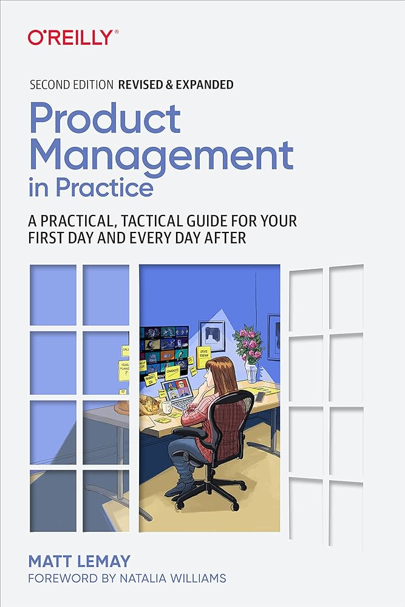

Best Book I Read in My Career - "Product Management in Practice" by Matt LeMay

It was a sunny day in 2019 when I found myself in the largest bookstore in Dubai, surrounded by a sea of books. I had three hours to choose my next read, a decision that would shape my professional journey. After careful consideration, I picked up "Product Management in Practice" by Matt LeMay, a choice I've never regretted, even though "Building Products for the Enterprise" was a close contender.
Even though I read and appreciated both books in the end, that choice impacted my career without any doubt. At that time, I was a business analyst in an outsourcing software development company who desperately wanted to become a product manager in a product organization.
I can't say that the book made me a product manager. But it definitely impacted me as the professional I am today - for better or worse (I hope for the better). I read it 3 or 4 times while transitioning from a business analyst to acting as a PM. Each time, I was surprised at how much wisdom was placed in that slim book and how differently I looked at some things throughout the years. It is like a peaceful harbor, and you want a return after fighting yourself through multiple storms.
In 2024, I realized that the 2nd edition was published in 2022, so before writing this piece, I enjoyed reading it. There are many changes compared to the previous version, but it is the same brilliant book. Here, I will talk about the 2nd edition.
If it is not the best, then it is one of the best books about product management. Below, I will prove my point.
Dealing with ambiguity
The skill of actually figuring out what you need is probably as important as what you do after you figure it out.
Brainstorming solution details with the team, working on wireframes, and putting a new business process into diagrams are a fancy part of the job. But before that, you usually go through hell and back, trying to crystallize an understanding of what you need to do.
Someone may be surprised that being a product manager is not about generating ideas and making other people implement them. It is about navigating through senior stakeholders, facilitating and communicating various points of view and agendas to serve business and customer needs. With a lot of responsibility but very little authority.
You are responsible for doing whatever needs to get done to ensure the success of your team and your product
It is your job to identify, evaluate, prioritize, and address anything that might affect your team's ability to deliver on its goals—whether or not you're explicitly told to do so.
That was a part of my work ethic before the reading, but it only enforced that. People who worked with me know that I can do everything I am capable of for my team and product. I am not writing code (actually, I do, but not for production) and not doing DevOps stuff. However, if needed, I can figure that out.
I am not replacing my team, and that is impossible. But I do everything I can to serve them to do their job the best way possible. Sometimes, that means keeping your hands dirty and diving into things outside of the area of your interests. That involves unpleasant conversations with people who have no interest in helping you, driving prioritization of dependencies, reading someone else code to understand those words, and many other things.
Dealing with insecurity
Product management can be a brutal and relentless trigger for insecurity, and insecurity can bring out the worst in all of us.
Dealing with ambiguity and not having a clear path to success causes a growing feeling of insecurity. For instance, I feel angry when someone asks whether my team and I are doing something relevant, as a vendor might easily replace it. I immediately switch to passive-aggressive mode. I am experienced enough to control that feeling and not cast fireballs at my opponent. But I need some time to calm down.
I just accept the fact that such criticism triggers deep insecurity. I take time to keep myself away from writing or saying something I would regret later.
Clarity over comfort
Great product managers not only tolerate, but actively enjoy, the challenge of creating alignment and understanding between different people with different experiences and perspectives.
That one really hurts. You don't want to put yourself in the spotlight by asking to clarify something that is apparently clear for all people in a room / a call but not for you. It is too uncomfortable, but you get used to it.
Whether I am a unique idiot who doesn't reach the intellectual heights of other people in a conversation (hiring me was a mistake, my apologies), or I can take a chance and clarify something for people who don't want to put themselves in the spotlight.
Each time, it is an internal dialogue: "I will look stupid." - "I better experience those 5 minutes of shame rather than deal with the consequences of that misunderstanding". - "F*ck it!"
People are primarily OK with explaining things to you again, and that is a beneficial exercise to bring everyone on the same page.
Make yourself obsolete
Product managers who excel at organization work with their teams to organize people, processes, and tools into self-sustaining systems that do not require their moment-to-moment participation or oversight.
That one is counterintuitive. One product manager I deeply respect once said: "If you don't need me, then I am doing my work right." It took me a while to understand that. And reading the same thought in that book made me think about it. We all want to be "needed," which is where micromanagement comes from. That is a bad way to deal with your insecurity.
If you, as PM, can take a step away from the details and let your team figure that out, you've built an empowered-Marty-Cagan-product team. It does not mean they don't need you anymore. But they don't need you to decide how a button should look like. That allows focusing on research and the bigger picture.
Curiosity is important
"I'm curious to learn more about the work that you do" is the most powerful sentence at your disposal as a product manager, whether it's your first day or you've been working in the field for decades.
Curiosity is a must-have trait for a product manager, which should drive them towards discovering new things. That applies when talking to senior stakeholders, users, and team members. That helps develop hard skills because once you start, you will pursue learning new things. For example, I don't need to master Docker and Kubernetes. Still, my curiosity pushed me to watch a few YouTube videos on the topic and then build a local image and run a container locally. I could do my job without that knowledge. But now I understand more about that: enough to understand what tech folks are discussing.
That is about being interested in what people are doing outside your current team: reading release notes, watching demos, and trying new things. You can learn something new or discover new ideas. It is the same for keeping up with industry updates and sharing them to spread curiosity among colleagues.
So, curiosity is essential, and I am looking for that trait when hiring people. A person can lack some hard skills, but a natural curiosity mitigates that.
Your Defensiveness
Perhaps the hardest single lesson I've learned in my product career is that literally every single attempt I've made to defend something has actually wound up harming that thing.
As a result of insecurity, unclear path to success, and indirect impact on things, you might first be defensive about your ideas and whether you are solving them correctly. Again, being a product manager is not about generating ideas. It takes time to learn to incorporate other views and be able to change your view.
I always have my opinion, but I am ready to drop it to find a better resolution to a problem. I made a final decision, but the path to that decision was not straightforward. I know that 98% of my own ideas are shit, so I encourage my team and other stakeholders to contribute. By the way, unwelcome and unexpected contributions can be frustrating but valuable.
That also concerns what is already implemented or in development at the moment. It is harsh to admit, "I thought the solution was right, but actually, it wasn't the case." Sometimes, you have to remove or redo some stuff. Even though you are backed with data, customer and stakeholder support, and 100% сertainty, the final result might not be delivered. You never know until you finish, so you can mitigate this risk, but chances cannot always be in your favor.
It hurts, but I learned to accept it as a part of the game. Every product manager has a hidden graveyard of "that didn't work out." To calm yourself down, here is a graveyard of Google products. I bet your case is not so bad.
Other people's defensiveness
But, as many product managers have learned the hard way, you are not likely to generate much goodwill by being the person who goes around asking everybody, "WHY ARE YOU DOING THAT?"
We want to look smart for others, not realizing we might try too hard to impress with our expertise. It is also counterintuitive that showing how good we are can push people away. The first impression matters, and making it as a high-minded jerk will complicate things further.
That concerns both users and other stakeholders. People can go defensive if you push or try to dominate and/or seem to be smarter than they, even unintentionally, with goodwill. Breaking such a defense can be a difficult and time-consuming affair. It is easier to prevent that and respect other people's egos.
People really love to talk about what and how they are doing. That topic is rarely discussed in their home and their day-to-day job. So they are excited to explain everything to you in detail. No one usually asks them, and we like to discuss and share our expertise.
You need a gentle push and a little trust to make that work.
No blaming yourself/everyone else
If you take everything that goes wrong as your own personal failure, you are depriving your team of a critical opportunity to learn and grow.
That is a continuation of insecurity and defensiveness. Matt describes such a type of product manager as a "product martyr" who takes all the blame. Such a person thinks they protect the team. But in reality, it doesn't.
It is similar to blaming others: bad company strategy, stupid dependencies, failed dependencies delivery. It is very easy to find a scapegoat.
As always, the truth is in between. As I mentioned before, we must accept the rules of the game and the fact that we can lose. We need to stand up and keep forward.
Communication Is Your Job—Don't Apologize for Doing Your Job
Effective product management requires asking lots of different people for lots of time, which can leave product managers feeling like the annoying jerks who drag everybody away from their "real" work and force them to attend meeting after meeting after meeting or answer email after email after email.
I tended to sound apologetic when I reach some person with a question or request something. Also, during a daily stand-up, I would say, "Today, I did nothing useful - just communication."
When you write a code or requirements specification, you have physical evidence of your job. As a product manager, you must accept that communication is your primary job: to align different parties to produce a desired outcome.
So, I stopped sounding apologetic when contacting other people. I am doing my job.
No surprises for senior stakeholders
One of the most helpful advice is establishing and maintaining trust with senior stakeholders. If you want to present something to a higher-up audience, you must consult with the most influential persons or who manage you.
You don't know all the context they know, so you should not make yourself look stupid or make your manager look silly. That might be a career-sensitive failure.
If something happens or you have a bold idea, ensure that senior stakeholders with whom you worked closely are aware and provide their feedback before going public. They don't like surprises like that.
Best practices myth
Most case studies about "best-in-class" companies are, to put it bluntly, recruiting propaganda.
After 10 years in the industry, I can say that everyone suffers from similar issues while developing a software product. Someone can do better, some worse. The number of problems depends on the scale of the enterprise. But generally, it is the same old story about poor strategy, planning, and execution.
It is about selling an image; you can't sell a not-so-successful image. You must radiate confidence to keep shareholders' value growing.
It is not about lying. It is about interpreting facts in someone's favor when the public can't see the whole picture. On an in-detail view, the picture may not be so fancy.
So breathe out. You are not alone with unclear strategy and hard-to-deal-with stakeholders, etc. We all do, including those guys.
Adapt process changes thoroughly
I am guilty of rushing process changes in how teams operated in the past. If I have an idea of improvements, I want to implement them immediately without much retrospective of my current process.
I learned the hard way if something works, even in the best way, there are reasons why it is that, and the history of past decisions impacted that. So now I would take time to research and understand the flow. Consider a process as a river. Drastic changes can cause a flood or drying up. On the other hand, minor changes may be drawn and have no impact.
Dealing with roadmaps
The best product managers treat roadmaps the same way they treat all documentation: as a helpful conversation starter for their team rather than a sacred monument to their own hard work and importance.
I don't have much to say except that the book teaches how to approach roadmaps. It is a gradual learning process, starting from an unrealistic plan and moving to a flexible map that shows a direction rather than a commitment to reach some destination.
Of course, stakeholders would like to have a committed plan. So, you also need to teach them how to treat and read a roadmap.
Combining a roadmap is an extensive topic I will cover in the future.
Final words
I mentioned only one-tenth of the great insights from that book. I made myself cut some pieces, not create a mini-book covering "Product Management in Practice" and comparing its editions.
That book is 100% in the top 5 product management books written so far. If you see some top without mentioning it, I question that top.
Must read, even if you are not a product manager but are interested in the topic. I suggest that brilliant book.